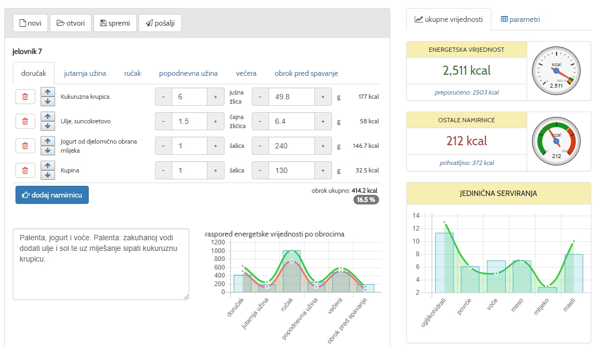
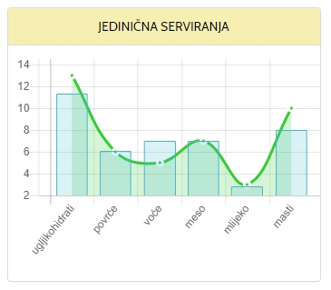
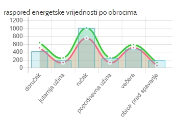

Izrada uravnoteženog jelovnika
uz pomoć web aplikacije Program Prehrane Web
OSMIŠLJAVANJE JELOVNIKA
Što je uravnotežen i raznovrstan jelovnik?
Dobro osmišljeni dnevni jelovnik treba zadovoljiti sljedeće:
- osigurati adekvatan energetski unos,
- zadovoljiti potrebe za nutrijentima,
- biti uravnotežen, što znači da u jednom danu sve skupine namirnica moraju biti zastupljene s adekvatnim brojem jediničnih serviranja,
- biti raznovrstan, što znači da uključuje što više različitih namirnica iz iste skupine i
- uključiti barem tri glavna obroka.
U sljedećem primjeru ćemo pokazati razliku izmedu uravnoteženog i neuravnoteženog jelovnika
Za primjer ćemo uzeti mušku osobu starosti 41 godinu, visine 80 cm i mase 105 kg. Osoba je slabo aktivna na poslu i u slobodno vrijeme, npr. uredski poslovi.
Izračun
- Indeksa tjelesne mase (BMI): 32,4
- Energetska potrošnja: 3302 kcal
- Preporučeni energetski unos: 3002 kcal
- Dodatna energetska potrošnja: 200 kcal

Primjer neuravnoteženog jelovnika
doručak
- Kava, bez šećera, 0.5 šalica, (126.6 g)
- Šećer, bijeli, 2 čajna žličica, (8 g)
- Croissant, 1 komad, (50 g)
jutarnja užina
- Burek sa sirom, 1 porcija, (250 g)
- Pivo, lager, 1 limenka, (333.3 g)
ručak
- Kava, bez šećera, 0.5 šalica, (126.6 g)
- Šećer, bijeli, 2 čajna žličica, (8 g)
popodnevna užina
- Svinjetina, kotlet, s masti, pečena na roštilju, 10 mali komad, (200 g)
- Krumpir, stari, 4 srednji plod, (600 g)
- Ulje, suncokretovo, 2 čajna žličica, (8.6 g)
- Kruh, bijeli, 4 kriška, (140 g)
večera
- Kruh, bijeli, tost, 2 kriška, (50 g)
- Šunka u ovitku, 2 mali komad, (56 g)
- Sir, Edam, 2 mali komad, (56 g)
- Palačinka, slatka, pripremljena s punomasnim mlijekom, bez nadjeva, 4 komad, (180 g)
- Namaz, od čokolade i lješnjaka, 2 porcija, (60 g)
- Pivo, lager, 1 limenka, (333.3 g)
Analiza jelovnika
Energetska vrijednost
Iz analize jelovnika je vidljivo da je energetska vrijednost jelovnika veća od energetske potrošnje za 632 kcal što za posljedicu ima
nakupljanje masnog tkiva i debljanje.
Udio ostalih namirnica (u koje spadaju npr: pivo, burek, kava i sl.) iznosi čak 2176 kcal što je 4 puta viće od prihvatljivih 536 kcal.

Jedinična serviranja
U dnevnom jelovniku nisu zastupljene namirnice iz skupina povrće, voće i mlijeka i mliječnih proizvoda, dok namirnice iz skupina žitarice i poroizvodi od žita i mesa i zamjena, zastupljene u količinama večim od preporučenih.

Raspored energetske vrijednosti po obrocima
Raspored energetske vrijednosti po obrocima također nije unutar preporuka.
U dnevnom jelovniku, doručak bi trebao biti zastupljen između 20-25%, ručak između 30-40%, a večera manje od 5%.
Primjer uravnoteženog jelovnika
doručak
- Kukuruzna krupica, 6 jušna žlica, (49.8 g)
- Ulje, suncokretovo, 1.5 čajna žličica, (6.4 g)
- Jogurt od djelomično obrana mlijeka, 1 šalica, (240 g)
- Kupina, 1 šalica, (130 g)
Palenta, jogurt i voće. Palenta: zakuhanoj vodi dodati ulje i sol te uz miješanje sipati kukuruznu krupicu.
jutarnja užina
- Jabuka, neoguljena, 1 veliki plod, (220 g)
- Breskva, 1.5 srednji plod, (241.5 g)
Voćna salata. Opranu breskvu i jabuku očistiti, izrezati i pomiješati.
ručak
- Svinjetina, but bez kosti, s kožom, 4 mali komad, (112 g)
- Rajčica, 1 veliki plod, (180 g)
- Kupus, kiseli, 2.5 šalica, (500 g)
- Luk, mladi, 0.4 šalica, (40 g)
- Paprika, zelena, izrezana, 1 šalica, (121 g)
- Ulje, suncokretovo, 5 čajna žličica, (21.5 g)
- Krumpir, mladi, kuhan u neposoljenoj vodi, 2 srednji plod, (280 g)
- Kruh, crni, prosjek, 1 kriška, (70 g)
- Keksi sa zobenim i pšeničnim brašnom, 3 komad, (30 g)
Pirjana svinjetina s povrćem, kuhani krumpir, kruh i desert.
popodnevna užina
- Jogurt od djelomično obrana mlijeka, 0.75 šalica, (180 g)
- Kruška, 2.5 srednji plod, (325 g)
večera
- Riba, bijela, prosjek, 3 mali komad, (84 g)
- Riža, bijela, 4 jušna žlica, (34 g)
- Luk, mladi, 0.4 šalica, (40 g)
- Tikvice, izrezane, 1.5 šalica, (128 g)
- Ulje, suncokretovo, 1.5 čajna žličica, (6,4 g)
- Kruh, crni, prosjek, 2 kriška, (70 g)
Pečena riba i povrtni rižoto.
obrok pred spavanje
- Mlijeko, kozje, 3,7 % m. m., pasterizirano, 0.5 šalica, (125 g)
- Šećer, bijeli, 2 čajna žličica, (8 g)
- Čokolada, mliječna, 0.3 porcija, (15 g)
Čokoladno kozje mlijeko
Analiza jelovnika
Energetska vrijednost

Jedinična serviranja
Raspored po obrocima
Pomoću web aplikacije Program Prehrane Web moguće je, uz već spomenutu energetsku vrijednost, jedinična serviranja i energetski udio po obrocima, pratiti i odnose makro i mikronutritivnih vrijednosti jelovnika.
Aplikacija daje preporučene, maksimalne i minimalne vrijednosti.
Nutrijenti

Mikronutrijenti

Raznovrsnost i odabir namirnica
Potreba za konzumiranjem raznovrsne hrane proizlazi iz činjenice da ne postoji hrana (osim mlijeka u prvim mjesecima života) čijom se konzumacijom u cijelosti mogu zadovoljiti dnevne energetske i nutritivne potrebe. Samo pravilnim odabirom različitih namirnica iz svih skupina, prehrana biva uravnotežena, a jela zanimljiva. Potrebno je konzumirati barem tri glavna obroka i u svaki od njih uključiti namirnice iz najmanje tri različite skupine. Prednost treba dati namirnicama u njihovu izvornom (neprerađenom) obliku te, kada je god moguće, obroke pripremati kod kuće kako bi se imao uvid u njihov sastav. Svježe pripremljena hrana općenito je kvalitetnija od gotove, a od načina pripreme preporučuje se kuhanje, pirjanje, roštiljanje ili pečenje u vatrostalnoj posudi. Uz pomoć web aplikacije Program Prehrane Web slijede se preporuke o odnosu energetskih vrijednosti jelovnika i zastupljenosti jediničnih serviranja u njima s ciljem da jelovnik bude uravnotežen s adekvatnim energetskim i nutritivnim vrijednostima.
Važnost žvakanja hrane
Hranu je potrebno konzumirati u ugodnoj atmosferi i dobro je sažvakati jer se na taj način olakšava njezina probava te apsorpcija i iskoristivost nutrijenata. Žvakanjem hrane potiče se izlučivanje sline, čime se snižava kiselost medija, što pomaže u sprječavanju pojave karijesa. Još jednom je primjetna važnost konzumiranja neprerađene hrane (primjerice voća i povrća te cjelovitih žitarica) jer ona zahtijeva dugo žvakanje. Kako bi se omogućilo pravilno žvakanje, potrebno je održavati zdravlje i higijenu usne šupljine. Nadalje, žvakanjem hrane šalju se impulsi mozgu da je hrana unesena u organizam, a što je ono dugotrajnije, mozak prima više impulsa. Iz ovoga se može zaključiti kako se nedovoljnim žvakanjem hrane teže kontrolira njezin unos, sitost se javlja sa zakašnjenjem, a sve to doprinosi povišenju tjelesne mase.
Bioritam i konzumiranje obroka
Potrebno je spomenuti kako je za uravnoteženu prehranu i održavanje primjerene tjelesne mase važan bioritam. Samo odmorni i naspavani možemo dobro obavljati svoje dnevne zadatke te biti tjelesno aktivni, što pridonosi sprječavanju nagomilavanja prekomjerne tjelesne mase. U različito doba dana sposobnost je organizma za obavljanje fizičkih i umnih napora različita, a različita je i njegova sposobnost za probavu hrane. Preporučljivo je poći spavati do 23 sata, a ujutro se probuditi do 7 i doručkovati do 8 sati. Ručak bi trebalo konzumirati od 12 do 14, a večeru, koja treba biti kompletna, no lakše probavljiva, do 20 sati. Preporučuje se unošenje i međuobrokâ, posebice u slučaju redukcijskih dijeta, zato što oni daju osjećaj sitosti, čime se sprječava prejedanje tijekom glavnih obroka. Obroke bi trebalo konzumirati u približno isto vrijeme, što pozitivno djeluje, ne samo na metabolizam, nego i na ritam života.